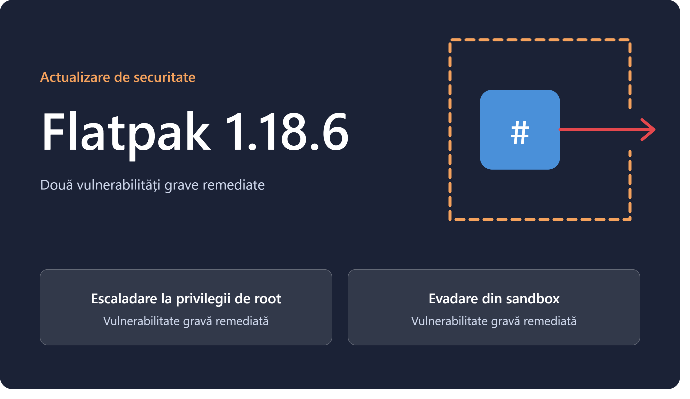

Flatpak 1.18.6 remediază două vulnerabilități grave de securitate: escaladare la privilegii de root și evadare din sandbox

chipa de dezvoltare a lansat Flatpak 1.18.6, o actualizare de securitate critică ce rezolvă două vulnerabilități majore care ar putea permite aplicațiilor malițioase sau compromise să obțină privilegii de administrator (root) ori să ocolească izolarea oferită de mediul sandbox.
Detaliile vulnerabilităților remediate
CVE-2026-133842 (Severitate critică – Escaladare a privilegiilor): Această problemă vizează mecanismul
extra-datadin Flatpak, utilizat pentru descărcarea resurselor suplimentare în timpul instalării unei aplicații. În anumite condiții, o aplicație, un runtime sau o extensie malițioasă instalată la nivel de sistem putea determina Flatpak să lase pe sistemul gazdă un fișier executabil cu permisiunisetuid root. Un atacator local ar fi putut exploata ulterior acest executabil pentru a obține acces deplin de tiproot.CVE-2026-133845 (Severitate ridicată – Evadare din sandbox): Vulnerabilitatea afectează modul în care serviciul
flatpak-portalgestionează descriptorii de fișiere la lansarea proceselor într-un subsandbox. Eroarea permitea unei aplicații compromise — chiar și uneia fără permisiuni speciale — să acceseze magistrala D-Bus de sesiune nefiltrată, reușind astfel să evadeze complet din izolarea sandboxului.
Disponibilitate și versiuni afectate
Corecțiile au fost integrate în Flatpak 1.18.6 (ramura stabilă) și în Flatpak 1.19.4 (ramura de dezvoltare). Inițial, aceste remedieri au fost pregătite pentru versiunile 1.18.5 și 1.19.3, însă acele lansări au fost înlocuite imediat după ce procesul lor de publicare a eșuat.
De asemenea, patch-urile de securitate au fost portate înapoi (backported) către ramura mai veche Flatpak 1.16.x, utilizată de distribuțiile cu suport pe termen lung (LTS), precum Debian 13. Întrucât această ramură nu mai este întreținută oficial de dezvoltatorii principali, nu va exista o lansare oficială nouă din partea lor, responsabilitatea livrării pachetelor actualizate revenind administratorilor fiecărei distribuții Linux.
Având în vedere gravitatea celor două breșe de securitate, utilizatorilor de Linux li se recomandă să își actualizeze pachetele Flatpak imediat ce acestea devin disponibile în depozitele oficiale ale distribuției pe care o folosesc.